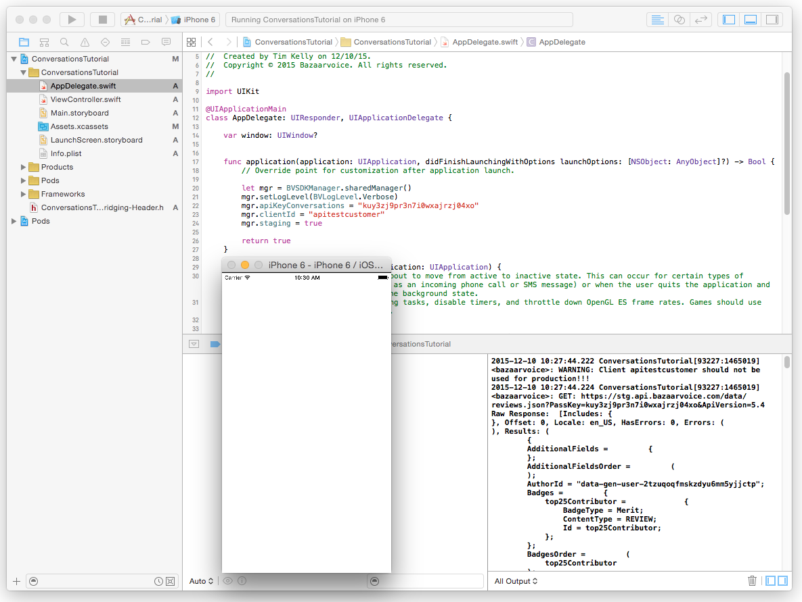

The Curations module is an easy-to-use wrapper around Bazaarvoice's Conversations API.
Contact Bazaarvoice about setting up Conversations, and to get your apiKeyConversations.
Import the SDK by adding this line to each file that uses the SDK:
import BVSDK
Then add the following to your AppDelegate's didFinishLaunchingWithOptions function:
BVSDKManager.sharedManager().clientId = "YOUR_CLIENT_ID"
BVSDKManager.sharedManager().apiKeyConversations = "YOUR_API_KEY"
BVSDKManager.sharedManager().staging = true // Set to false for production!
Import the SDK by including these headers:
#include <BVSDK/BVSDK.h>
#include <BVSDK/BVCurations.h>
Then add the following to your AppDelegate's didFinishLaunchingWithOptions function:
[BVSDKManager sharedManager].clientId = @"YOUR_CLIENT_ID";
[BVSDKManager sharedManager].apiKeyConversations = @"YOUR_API_KEY";
[BVSDKManager sharedManager].staging = YES; // set to NO for production!
At this point you should have the BVSDK installed and initialized, so we can now make an API call to the Conversations API
Add the BVDelegate protocol to your view controller
import BVSDK
class ViewController: UIViewController, BVDelegate {
...TODOFill in the BVDelegate:didReceiveResponse:forRequest: function.
func didReceiveResponse(response: [NSObject : AnyObject]!, forRequest request:
AnyObject!) {
print("Raw Response: ", response)
}TODOMake an API call. In the viewDidLoad function of your view controller make an API call to get some reviews:
let request = BVGet(type: BVGetTypeReviews)
request.sendRequestWithDelegate(self)
TODOFinally, run the application and check the console for a successful API call.
Referencing the Conversations API is crucial to getting and submitting data to Bazaarvoice correctly.
In order the get more familiar with the Conversations module APIs, you should become familiar with the BVGet and BVPost classes which are used to construct all the Conversations API calls. Explore the example projects in the Examples/ folder of the SDK from this repository.